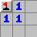

In Minesweeper the goal is to click on every square that does NOT have a bomb under it, at which point the game ends and you WIN .
For every square that you believe that a bomb is under you can use the flag to mark it.
The first step is always clicking a random square and see what it reveals.
If you have a square with the number 1 and only one adjacent square that is not already discovered that means that square will be a bomb, in this case you use the flag to mark that square.

The same logic will apply to larger numbers, where a square with the number 2 has 2 bombs adjacent to it and so on.